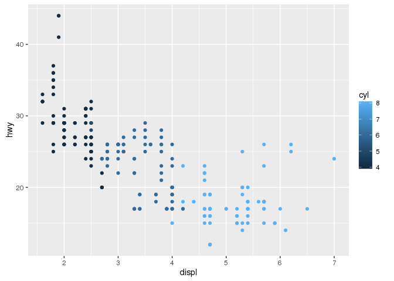
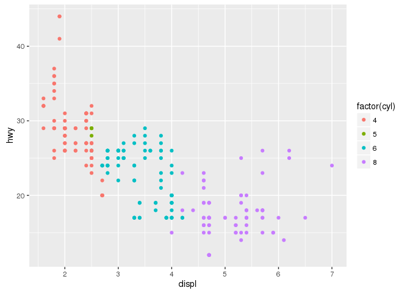
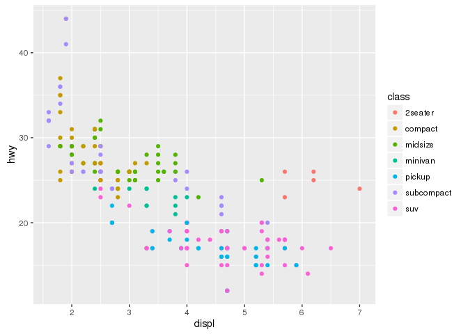
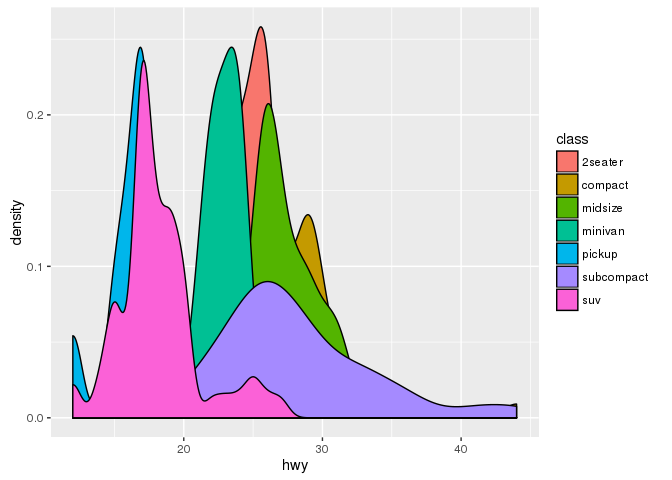
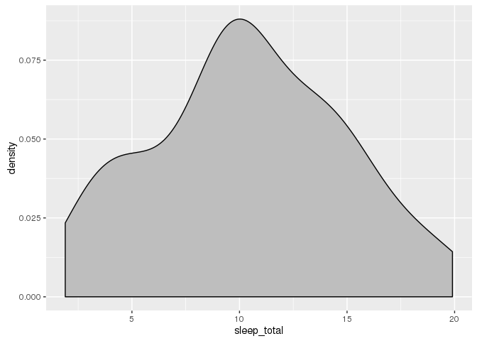
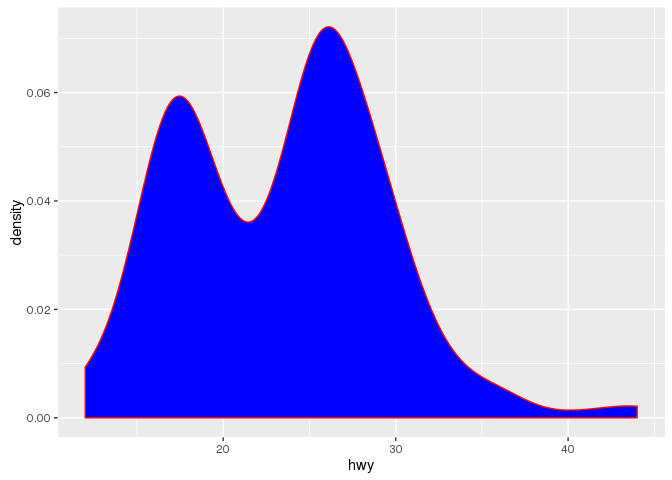
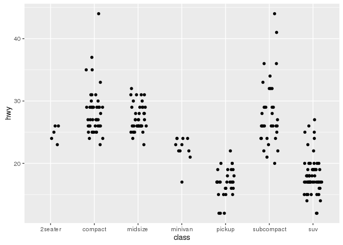

ggplot2
Pierre Gestraud
4 octobre 2016
Example data
head(msleep)## name genus vore order conservation
## 1 Cheetah Acinonyx carni Carnivora lc
## 2 Owl monkey Aotus omni Primates <NA>
## 3 Mountain beaver Aplodontia herbi Rodentia nt
## 4 Greater short-tailed shrew Blarina omni Soricomorpha lc
## 5 Cow Bos herbi Artiodactyla domesticated
## 6 Three-toed sloth Bradypus herbi Pilosa <NA>
## sleep_total sleep_rem sleep_cycle awake brainwt bodywt
## 1 12.1 NA NA 11.9 NA 50.000
## 2 17.0 1.8 NA 7.0 0.01550 0.480
## 3 14.4 2.4 NA 9.6 NA 1.350
## 4 14.9 2.3 0.1333333 9.1 0.00029 0.019
## 5 4.0 0.7 0.6666667 20.0 0.42300 600.000
## 6 14.4 2.2 0.7666667 9.6 NA 3.850Create additionnal variable
msleep$continent <- rep(c("Europe", "Africa", "Asia"), length.out = nrow(msleep))First plot
qplot(sleep_total, sleep_rem, data = msleep)
qplot(sleep_total, sleep_rem, color = vore, data = msleep)
qplot(sleep_total, sleep_rem, size = bodywt, data = msleep)
Advanced control
main function: ggplot
Grammar of graphics
plot = data + geom + coordinate system
Layer
a layer is composed of
- data and aesthetic mapping,
- a statistical transformation,
- a geometric object
- and a position adjustement
ggplot(msleep, ## data
aes(x = sleep_total, y = sleep_rem)) + ## aesthetics
geom_point() + ## layer
ggtitle("REM vs total") ## additionnal elements
a plot is an R object
g <- ggplot(msleep, aes(x = sleep_total, y = sleep_cycle)) + geom_point()
g ## or print(g)
g + ggtitle("cycle vs total")
geom
- one variable
- continous
geom_densitygeom_histogramgeom_freqpoly
- discrete
geom_bar
- continous
- two variables
- continous X, continuous Y
geom_pointgeom_smoothgeom_text
- discrete X, continuous Y
geom_bargeom_boxplotgeom_violin
- bivariate distribution
geom_density2dgeom_hexgeom_bin2d
- continuous function
geom_linegeom_step
- continous X, continuous Y
- three variables
geom_contourgeom_tile
ggplot(msleep, aes(x = vore, y = sleep_total)) + geom_boxplot()
ggplot(msleep, aes(x = vore)) + geom_bar()
aesthetics
xyzcolorfillsizetext
ggplot(msleep, aes(x = vore, y = sleep_rem, fill = vore)) + geom_boxplot()
ggplot(msleep, aes(x = vore, y = sleep_rem, color = vore)) + geom_boxplot()ggplot(msleep, aes(x = vore, y = sleep_rem, fill = continent)) + geom_boxplot()add a smoother on the plot
Default smoother (loess if <1000 obs, gam otherwise)
ggplot(msleep, aes(x = sleep_total, y = sleep_cycle)) + geom_point() + geom_smooth()
Linear model
ggplot(msleep, aes(x = sleep_total, y = sleep_cycle)) + geom_point() + geom_smooth(method = "lm")Remove SE
ggplot(msleep, aes(x = sleep_total, y = sleep_cycle)) + geom_point() + geom_smooth(method = "lm", se = FALSE)
Order matters
ggplot(msleep, aes(x = vore, y = sleep_total)) + geom_point() + geom_boxplot()ggplot(msleep, aes(x = vore, y = sleep_total)) + geom_boxplot() + geom_point()
Scales
xlim/ylimvscoord_cartesian
ggplot(msleep, aes(x = sleep_total, y = sleep_cycle)) + geom_point() + xlim(c(7.5, 17))
ggplot(msleep, aes(x = sleep_total, y = sleep_cycle)) + geom_point() + coord_cartesian(xlim = c(7.5, 17))
ggplot(msleep, aes(x = sleep_total)) + geom_density(fill = "gray") 
ggplot(msleep, aes(x = sleep_total)) + geom_density(fill = "gray") + xlim(c(7.5, 17))ggplot(msleep, aes(x = sleep_total)) + geom_density(fill = "gray") + coord_cartesian(xlim = c(7.5, 17))- axis transformation
- order
- color scales
Themes
- default themes
- customize theme
Faceting
Two functions for facetting: - facet_wrap - facet_grid
ggplot(msleep, aes(x = sleep_total, y = sleep_rem)) + geom_point() + facet_wrap(~ vore)
ggplot(msleep, aes(x = sleep_total, y = sleep_rem)) + geom_point() + facet_grid(continent ~ vore)
Controling facet_wrap organisation
ggplot(msleep, aes(x = sleep_total, y = sleep_rem)) + geom_point() + facet_wrap(~ vore, nrow = 1)
All layers are faceted
ggplot(msleep, aes(x = sleep_total, y = sleep_rem)) + geom_point() + facet_wrap(~ vore) + geom_smooth(se = FALSE, method = "lm")
- scales free
- labels
add supplementary data
Programming with ggplot2
ggplot2 use non standard evaluation (NSE). How to use variables in aes? aes_string allows standard evaluation.
var_x <- "sleep_total"
var_y <- "sleep_rem"
ggplot(msleep, aes(x = var_x, y = var_y)) + geom_point()
ggplot(msleep, aes_string(x = var_x, y = var_y)) + geom_point()
Plot heatmap with ggplot2
ggplot(msleep, aes(x = continent, y = vore, fill = sleep_total)) + geom_tile()
d <- as.data.frame(matrix(rnorm(100), ncol = 10))
colnames(d) <- paste0("s", 1:10)
d$gene <- paste0("g", 1:10)
require(tidyr)
dm <- gather(d, key = "sample", value = "exp", -gene) ## convert data to long format
ggplot(dm, aes(x = sample, y = gene, fill = exp)) + geom_tile()
Interactivity
require(plotly)
g <- ggplot(msleep, aes(x = sleep_total, y = sleep_rem)) + geom_point()
ggplotly(g)g <- ggplot(msleep, aes(x = sleep_total, y = sleep_rem, color = vore, text = name)) + geom_point()
ggplotly(g)Extensions
ggrepel: smart geom_text and geom_label placementcowplot: several plots on one pageggraph: visualise graphggmap: plot data on a mapfactoextra: visualise results of factorial analysis (PCA, CA, MCA, MFA, …)ggbio: visualise genomic dataggdendro: visualise dendrograms and trees